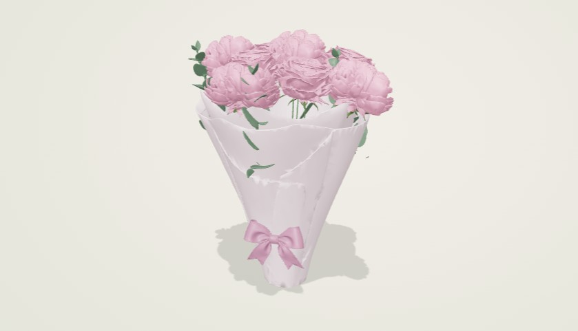
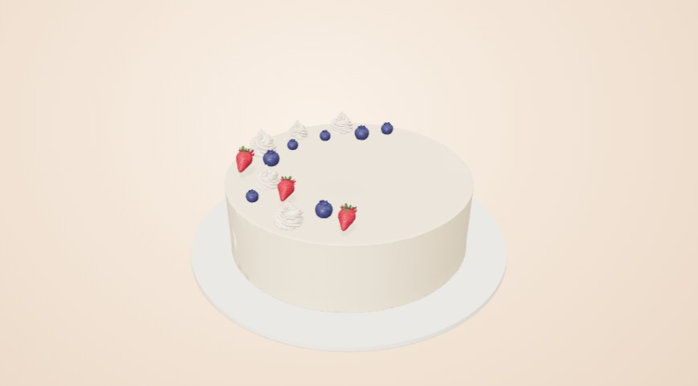
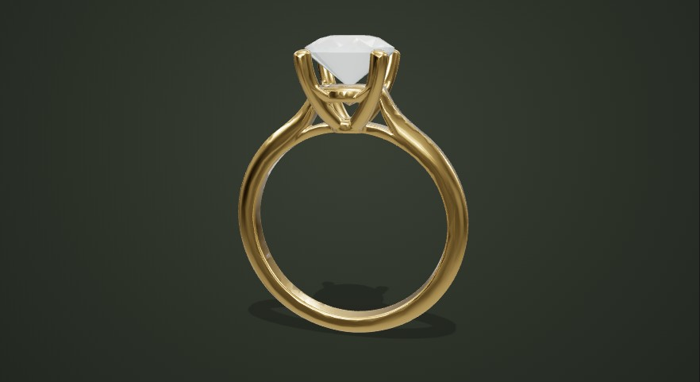

Пион
Спокойный ритм, природная палитра и цветы крупным планом. Конструктор помогает найти композицию для своего повода.
От первого впечатления до собственного продукта. Самостоятельные бренды, продуманные магазины и студии, в которых идеи обретают форму в 3D.

Спокойный ритм, природная палитра и цветы крупным планом. Конструктор помогает найти композицию для своего повода.

Сливочная бумага, мягкие формы и терракота. Соберите праздничный торт: от формы ярусов до ягод и топпера.

Контрастная типографика, строгая сетка и редакционная подача. Личная капсула из вещей, которые работают вместе.

Свет на металле, точность деталей и сдержанное золото. Личная студия силуэтов, материалов и драгоценных камней.
Типографика, цвет, пространство и тон текста продолжают идею бренда во всех сценариях.
Живой предпросмотр, понятные варианты, расчёт стоимости и сохранение своего выбора.
Адаптивные интерфейсы, управление с клавиатуры и фото вместо пустого экрана при недоступном 3D.